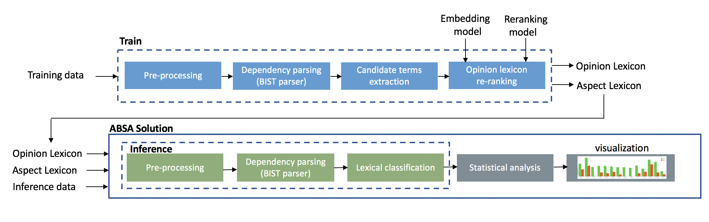
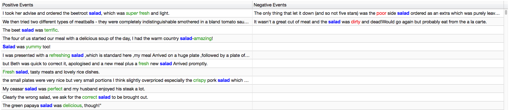

Aspect Based Sentiment Analysis (ABSA) Solution¶
Overview¶
Aspect Based Sentiment Analysis is the task of co-extracting opinion terms and aspect terms (opinion targets) and the relations between them in a given corpus.
Solution Overview¶
The input to the solution is an inference dataset along with an opinion and aspect lexicons. The output of the solution is a visulalization of a statistical analysis of sentiment towards specific aspects in the inference dataset.
The solution uses the opinion and aspect lexicons that are generated using NLP Architect’s ABSA training model (see blue blocks in ‘flow’ diagram below). For more details regarding the training step see ABSA.
The solution encapsulates the ABSA inference model (green blocks) and adds on top of it a statistical analysis module (grey block) for calculating the amount of positive and negative sentiment instances per aspect and a visualization module (grey block).
Flow¶
Visualization¶
The visualization includes two sections:
Bar-chart that displays the amount of positive and negative sentiment towards each aspect:

2. Textual table that displays (upon clicking a specific aspect on the bar chart) sentences that include positive/negative sentiment towards that specific aspect. Aspect terms are colored in blue and opinion terms are colored in green/red:
Solution execution¶
The solution execution is divided to two parts - training and inference:
Inference¶
Full code example is available at examples/absa/solution/absa_solution.py.
There are two training modes:
1. Providing solution data in a raw text format. In this case the solution flow will apply the dependency parser to the data:
SentimentSolution().run(aspect_lex='/path/to/aspects.csv',
opinion_lex='path/to/opinions.csv',
data='/path/to/text/file/or/directory')
Arguments:
aspect_lex'=/path/to/aspects.csv' - path to aspect lexicon (csv file) that was produced by the training phase.
aspect.csv may be manually edited for grouping alias aspect names (e.g. ‘drinks’ and ‘beverages’)
together. Simply copy all alias names to the same line in the csv file.
opinion_lex='path/to/opinions.csv' - path to opinion lexicon (csv file) that was produced by the training phase.
data=/path/to/text/file/or/directory - path to a single raw text file with documents
separated by newlines or a single csv file containing one doc per line or a directory containing one raw
text file per document.
Notes:
a. For demonstration purposes we provide a sample of tripadvisor.co.uk
restaurants reviews under the Creative Commons Attribution-Share-Alike 3.0 License (Copyright 2018 Wikimedia Foundation).
The dataset can is located at datasets/absa/tripadvisor_co_uk-travel_restaurant_reviews_sample_2000_test.csv.
b. By default, when the execution terminates, a browser window is opened, displaying the visualization UI.
stats_dataframe = SentimentSolution().run(aspect_lex='/path/to/aspects.csv',
opinion_lex='path/to/opinions.csv',
parsed_data='/path/to/parsed/directory',
ui=False)
Note:
Setting ui=False disables the UI and enables to get the sentiment statistics as dataframe. This
enables the user to use those statistics as input to his own custom built visualization.